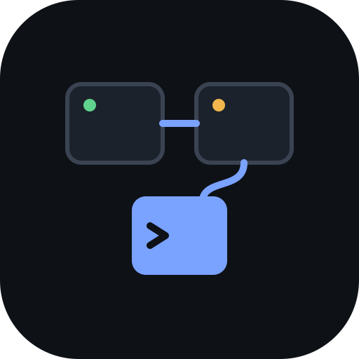
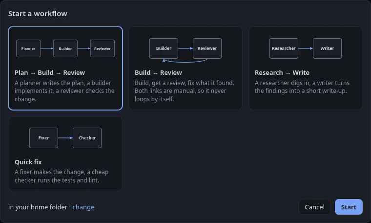

TileworkTilework puts Claude Code, Codex, Gemini CLI and your shell in real terminal tiles on one canvas. See who is working, who is done and who is waiting on you, then pass one agent's result straight to the next.
Linux x64 · MIT license · no account, no telemetry
1. add reverse(s) in reverse.js
2. spread to keep emoji whole
3. one node:test file
Done. Plan is ready.
Wrote reverse.js
Wrote reverse.test.js
npm test: 1 passing
Done.
Handoff from Builder
Reading the diff against the plan
Allow edit to reverse.js?
Waiting on you
Each tile is a real terminal backed by a real PTY, running your own CLIs with your own config. A small hook tells Tilework what every Claude Code session is doing, so one dot per tile answers the only question that matters.
Drag from one tile to another to link them. When the first agent finishes, press Send → and its last answer lands in the next tile along with your instruction, like "Review this change for bugs".
Start a ready-made layout: Plan → Build → Review, Build ↔ Review, Research → Write or Quick fix. Each tile gets its model and each link its instruction. Arrange a canvas you like and save it as your own workflow.

With the Nublet extension, the clock turns into a pill that shows each agent by its tile name. Approve a permission prompt right there, or click to jump straight to that tile on the canvas.
Grab the AppImage, make it executable and run it. Have the agent CLIs you want (claude,
codex, gemini) on your PATH. On first launch Tilework offers to add its status
hook to Claude Code, with a backup of your settings.